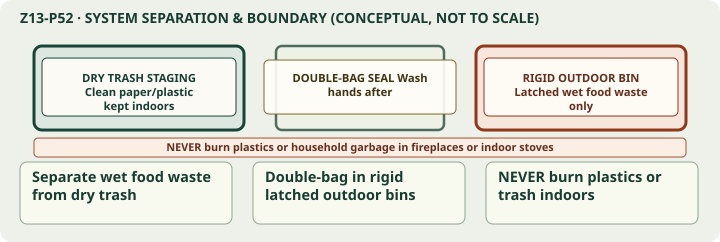

Z13-P52 · Home survival and utilities · New manuscript
Contain household trash and spoiling food safely during prolonged service halts
Prevent rodents, bears/wildlife, flies, and pathogen buildup when municipal garbage pickup stops for weeks after storms.
When it applies · Multi-week winter storms, flood cleanups, or prolonged regional infrastructure disruptions.
Equipment · Heavy contractor trash bags, tightly lidded metal/rigid outdoor bins, wildlife-resistant locks where relevant, and separate dry-recyclable staging.

Actions
- Separate wet organic food scraps (especially spoiled outage meat/dairy) immediately from dry paper/plastic trash—double-bag wet putrescible waste tightly inside rigid animal-proof lidded bins stored outdoors away from living spaces and wellheads.[U13, E27]
- Flatten and keep clean dry cardboard, rinsed cans, and plastics dry indoors or in sheds so scarce rigid outdoor bins stay reserved for odor-prone waste; NEVER burn household plastics, treated wood, or garbage in indoor fireplaces or backyard barrels (toxic dioxins and fire risk).[U18, U13]
- Wash hands after every trash-handling task and follow county/municipal emergency debris drop-off schedules once roads open.[U13, F01]
Failure recognition · Piling bags of thawed outage meat on an open back porch, attracting raccoons, rodents, or bears directly to household entrances.[U13, E27]
Verify · Confirm wet waste double-bagged in rigid latched outdoor bins, zero trash burned indoors, and handwashing performed after handling.[U13, U18]
Stop or change course · Rodent/wildlife intrusion, maggot/sewage contamination, or toxic chemical debris requires immediate containment and county waste-authority guidance.[U13, E27]
Evidence and editorial notes
- E27 · USDA Forest Service · Responsible Recreation (current web edition)
- Section: Responsible Recreation > Preparedness and Wildlife Safety · Conditions: Backcountry camps in bear and wildlife country
Support: Store food, scented items, and cooking gear separately from sleeping shelters according to local land-agency rules to prevent wildlife intrusions into sleeping areas.
Limitations: Required storage method (bear canister, locker, hang) varies by jurisdiction. · Conflicting evidence: None; keeps cooking and food odors separate from shelter enclosures.
Editorial note: Connects camp layout, odor separation, and shelter safety. · Specialist reviewer: Land management and wildlife safety
Primary source · checked 2026-11-24 - F01 · USDA / FDA / CDC · Four Steps to Food Safety (current web edition)
- Section: Clean and Separate · Conditions: Food preparation with safe water and surfaces
Support: Wash hands and separate raw animal foods and juices from ready-to-eat food.
Limitations: Requires safe water or approved hand hygiene substitutes in outages. · Conflicting evidence: None; retained for food safety pack completeness.
Editorial note: Maintains five-pack integrity. · Specialist reviewer: Food safety and public health
Primary source · checked 2026-11-24 - U13 · CDC · How to Make Water Safe in an Emergency (2024-09-19)
- Section: Sanitation, Hand Hygiene, and Emergency Waste Containment · Conditions: Household water-service or sewer interruption
Support: Maintain separate handwashing stations using safe water and soap (or alcohol hand rub when hands are not visibly soiled), line emergency bucket toilets with heavy bags and tight lids when sewer service is unusable, and never mix bleach with ammonia or acids.
Limitations: Improvised sanitation is a temporary containment bridge until municipal sewer or licensed sanitation resumes; follow local health department disposal orders. · Conflicting evidence: None; prevents fecal-oral outbreaks and toxic chloramine gas mixing.
Editorial note: Core household sanitation and chemical-mixing boundary in Z13. · Specialist reviewer: Environmental health and sanitation specialist
Primary source · checked 2026-11-24
Current assessment · A04-U13 (2026-11-25) · Open: support partial or missing (A04): The original water section cannot qualify bucket toilets or all chemical conditions. Water/hygiene and sanitation/chemical controls need partial separation and local sanitation review. Limits: Specialist review PENDING (Environmental health and sanitation specialist); publication HOLD. All release decisions pending.
Current assessment · W2C-E035 (2026-11-28) · Narrowed: later guidance limits this claim: Alcohol rub is a fallback only when soap and water are unavailable; it does not replace handwashing after toilet, diaper or vomit tasks or before food. Limits: The baseline U13 text is kept for history; cards now cite U26 and U27 for the hand-hygiene boundary. - U18 · NFPA · Heating Fire Safety (current web edition)
- Section: Wood Stoves, Chimneys, Ash Disposal, and Fuel Storage Safety · Conditions: Residences heated by properly installed wood stoves or fireplaces
Support: Burn seasoned dry wood only, clean creosote-prone chimneys regularly through qualified sweeps, empty cooled ashes strictly into lidded metal containers set outdoors well away from decks and structures, and never burn treated lumber or trash indoors.
Limitations: Embers stay hot enough to ignite cardboard or wood decks days after a fire appears dead. · Conflicting evidence: None; critical winter wood-heat fire prevention boundary.
Editorial note: Covers solid-fuel residential heating maintenance and ash-fire failure modes. · Specialist reviewer: Fire safety and certified chimney/HVAC trades
Primary source · checked 2026-11-24
Source lineage · FEMA Ready.gov and USDA Food Safety; new manuscript · Classification · New manuscript.